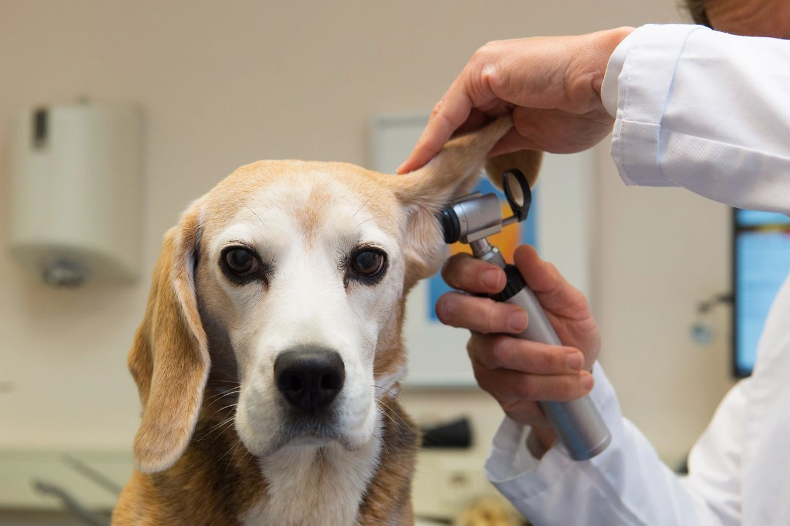

Veterinary medicine and AI
27 October 2021

Virtually every area of life is somehow touched by AI, enhancing our understanding of complex issues and making better outcomes more likely. In the human health care industry, AI is being used in image interpretation, disease diagnosis, patient monitoring, drug development, and even robotic surgery.
Veterinary medicine and pet owners are also using AI technologies, most notably in the areas of radiography, triage, and diagnosis.
Data analysis
Dr. Krystle Reagan makes it clear that she isn’t a computer scientist. Rather, she’s a veterinary internist at the UC-Davis Veterinary Medical Teaching Hospital and an advocate of AI. She helped develop an algorithm to detect Addison disease with an accuracy rate greater than 99%.
“We call Addison’s disease ‘the great pretender’ because dogs come in with very vague clinical signs. The blood work can look like intestinal disease, it can look like kidney disease, it can look like liver disease. So it’s one of those conditions that you really have to be on your toes,” Dr. Reagan said.
Blood work results from more than 1,000 dogs previously treated at the teaching hospital were used to train an AI program to detect complex patterns suggestive of the disease. The computer program was then able to use these patterns to determine whether a new patient has Addison disease. Dr. Reagan and her team published their findings in the July 2020 issue of the journal Domestic Animal Endocrinology.
Now Dr. Reagan is coding data from canine patients seen at the UC-Davis teaching hospital over the past decade in which leptospirosis was diagnosed or suspected but later ruled out. The project is a collaboration among Drs. Reagan and Strohmer and the center for data science and AI.
“Then we’re using machine learning algorithms to try to identify subtle patterns in the blood work of these dogs that might help us categorize them as having leptospirosis or not earlier than we can with traditional diagnostics,” Dr. Reagan explained.
Timing is important when diagnosing leptospirosis, Dr Reagan said, because the disease can cause serious kidney problems that can become so severe as to require dialysis. “Unfortunately, the gold standard testing for leptospirosis requires two antibody tests about 10 days apart,” she continued.
“The gold standard tells us that I can’t make a diagnosis until at least 10 days after illness. And we really need some sort of tool to help us give owners some guidance in terms of prognosis when we’re looking at this ill dog and deciding whether or not to move forward with dialysis.
“We’re hopeful that we can find patterns in the data that will help us classify our canine patients as having leptospirosis or not–or at least to help us say we think there is an 80% chance that your dog has leptospirosis or we think it’s very unlikely that your dog has leptospirosis.”
X-ray vision
Radiography is another area where AI is being used with great success. Complex algorithms have been shown to be highly accurate in recognizing patterns in imaging data.
The National Academy of Medicine estimates that about 100 scientific reports dealing with AI in radiology were published in 2005, but the number of publications had increased to more than 800 in 2017.
“Tasks for which current AI technology seems well suited include prioritizing and tracking findings that mandate early attention, comparing current and prior images, and high-throughput screenings that enable radiologists to concentrate on images most likely to be abnormal,” the academy wrote in its 2019 report. “Over time, however, it is likely that interpretation of routine imaging will be increasingly performed using AI applications.”
The company Vetology has provided traditional veterinary teleradiology services since 2010. Two years ago, the company began offering the option of AI analysis of radiographs of the thorax, heart, and lungs in dogs. Results are ready within five minutes and promise an accuracy rate on par with that of a live veterinary radiologist, said Vetology founder and CEO Dr. Seth Wallack, a board-certified veterinary radiologist.
“Studies of MD radiologists have shown that, on average, they’re correct about 70% to 75% of the time. I always tell people I would love to get the diagnosis right 80% of the time,” Dr. Wallack said.
“A feedback loop is crucial to AI improvement. When we catch a problem, we can ask, ‘What did the AI report say, and why did AI interpret it that way?’ Then we tweak things a little bit to help the machine learn, improving future AI results.”
Dr. Wallack recalled a recent case involving a referring veterinarian who thought a dog might be in left-sided heart failure. The owners were contemplating euthanasia. After receiving the Vetology AI radiology report stating there was no evidence of heart disease or heart failure, the referring veterinarian asked Vetology to have a board-certified veterinary radiologist examine the images. Dr. Wallack said, “I received that submission, and there was just enough rotation and fluid in the caudal thoracic esophagus that I thought to myself, ‘I totally see how this could be interpreted as pulmonary edema.’ It wasn’t, and the Vetology AI system read it correctly. I think AI just saved a dog’s life.”
He added, “Our belief has always been that receiving a Vetology AI radiograph report within five minutes or less after taking the radiographs will positively impact patient outcomes. That said, every day I’m blown away by what Vetology AI does.”
Future perfect?
Dr. Rolan Tripp is interested in the future of the veterinary profession. He’s been talking about it for 30 years and even founded the Veterinary Future Society. Dr. Tripp believes AI is the future of veterinary medicine.
“I think most people don’t understand how huge of an effect this is going to have, any more than when a hundred years ago veterinarians saw that first tractor out in the field and laughed when it broke down. Many veterinarians today think AI is a fad, but it isn’t. It will revolutionize how we practice veterinary medicine, mostly in a good way,” Dr. Tripp said.